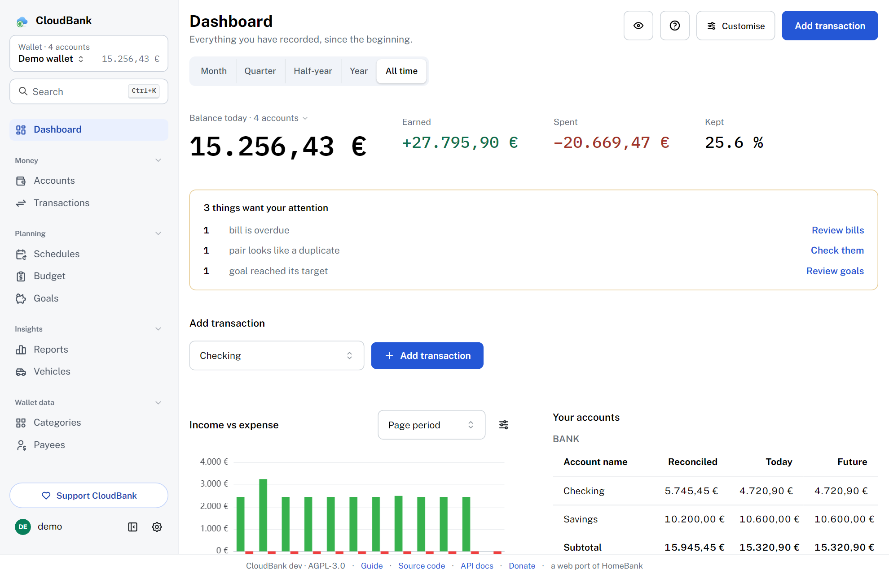
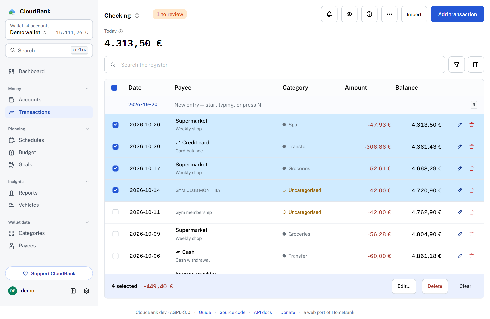
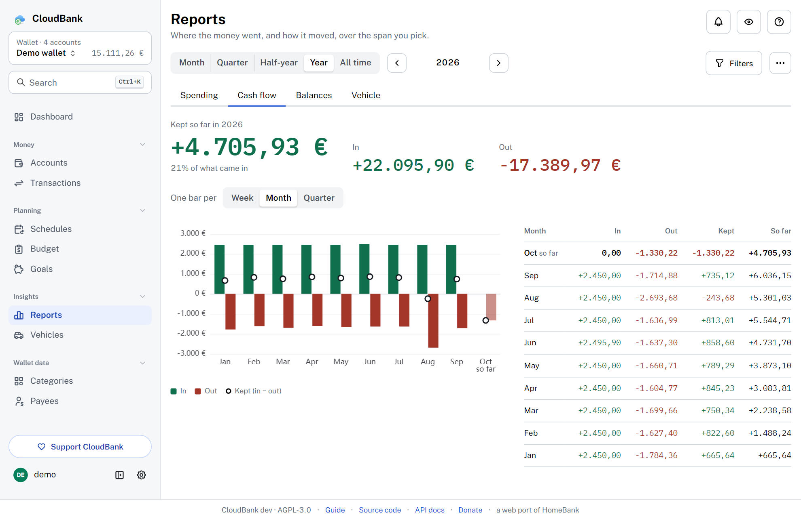

What it is
CloudBank is a free, open-source, self-hosted personal finance manager — a production-ready web port of HomeBank. Accounts, a powerful register, scheduled transactions, budgets, rich reports, automatic bank sync, bank mails, notifications, an optional AI with your own key and a customizable dashboard.
At a glance
- Licence
- AGPL-3.0


